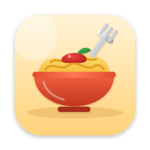

Privacy Policy
Pasta - Clipboard History for macOS
Last updated: 5 November 2026
Pasta is a clipboard history app for macOS. This policy explains what happens to your information when you use it.
What Pasta stores
Pasta saves the text you copy, the name of the app you copied it from, and when you copied it. This lets you search and reuse your history. Pasta also saves your settings, such as your shortcuts and sort order.
Where it is stored
Everything stays on your Mac, inside Pasta's private app folder. Pasta does not send your clipboard history or any other information anywhere. It has no network access, no accounts, no analytics, no advertising and no third-party code that collects data.
What Pasta skips
Pasta does not save items that apps mark as concealed or temporary, which is how most password managers flag copied passwords. You can also pause saving at any time.
Accessibility permission
If you turn on "Paste directly after picking", macOS asks you to allow Pasta to use Accessibility. Pasta uses it only to press Command-V for you in the app you return to. It does not read or record anything else.
Deleting your data
You can delete single items, or clear your whole history in Settings. Deleting Pasta from your Mac removes its data as well.
Children
Pasta does not knowingly collect any information from anyone, including children.
Changes
If this policy changes, the new version will be posted on this page with a new date.
Contact
Questions? Email YOUR-SUPPORT-EMAIL.